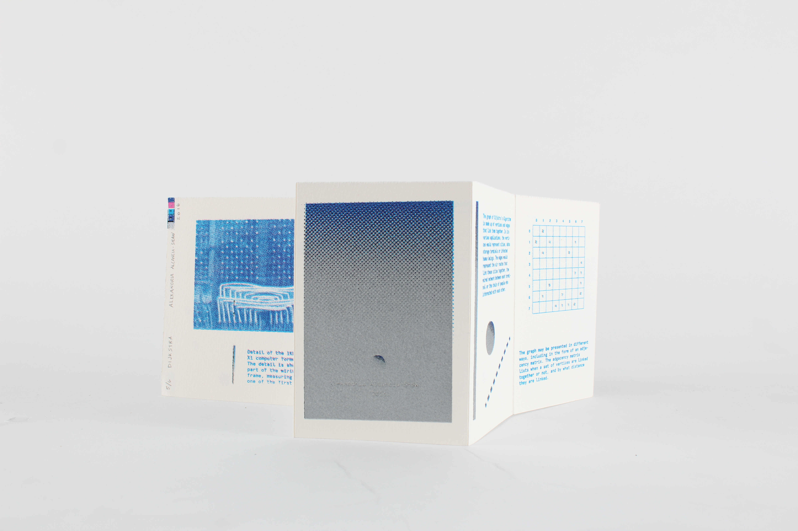
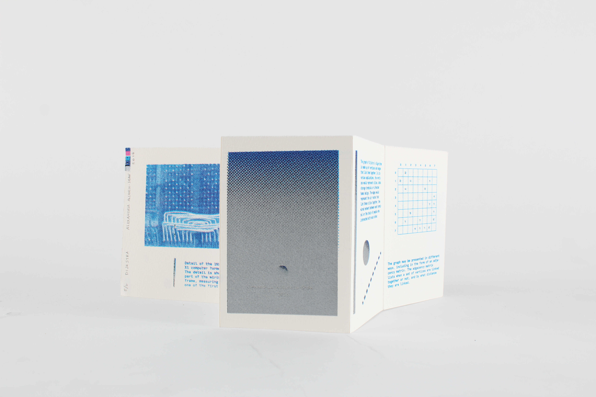
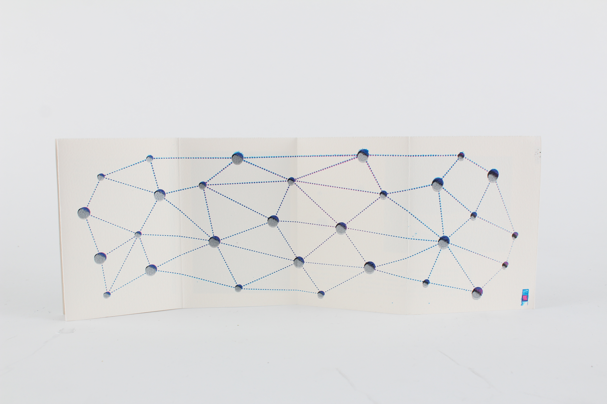
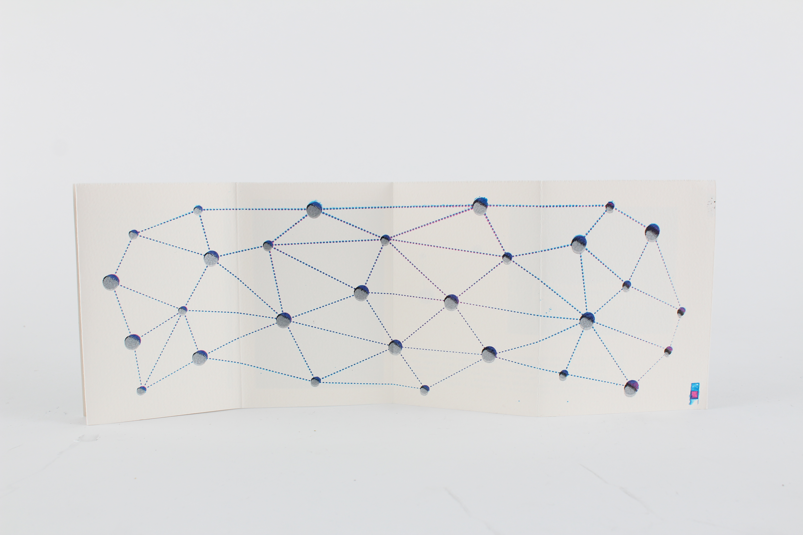

Dijkstra
2016
Screenprinted booklet
An edition of six screen printed informative pamphlets on Dijsktra's algorithm. Dijsktra (1930-2002) was a dutch Computer Science pioneer, who invented this algorithm to be used for finding the shortest path between nodes in a system. For example, one applied technique is finding the shortest flight path between Montreal and Los Angeles. The motivation behind this project was to attempt to reuse scrap paper from book printing projects - and therefore making booklets from 3 feet long sheets of paper. This was printed on Arches 300 paper, and all text and images were sourced from Wikipedia.

 

 
